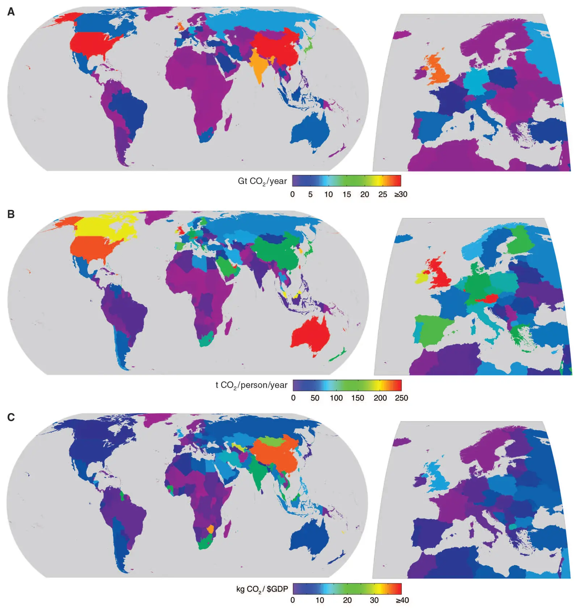

Future CO2 emissions and climate change from existing energy infrastructure
Key finding. If all existing fossil-fuel infrastructure were operated to the end of its normal lifetime and then replaced with infrastructure emitting no CO2, atmospheric CO2 would remain below 430 ppm and global mean temperature would rise to about 1.3 °C above preindustrial — below the 450 ppm and 2 °C targets then under discussion.

What question did this research address?
Climate projections are usually built from scenarios of future behaviour, which makes them arguments about what people will choose to do. That leaves a prior question unanswered.
This paper asked what the climate future would look like if we simply stopped building new fossil-fuel-burning infrastructure — letting everything already built run to the end of its life and replacing it with something that emits no CO2. The answer isolates the commitment already embodied in physical capital from any assumption about future policy.
What did we find?
The calculation assumes existing infrastructure is used until the end of its lifetime and is then replaced by infrastructure that produces no CO2, and totals the additional CO2 that would be added to the atmosphere on that assumption.
Atmospheric CO2 stays below 430 ppm on this accounting, against a level of about 390 ppm at the time of writing.
Global mean temperature rises to roughly 1.3 °C above preindustrial values, about 0.5 °C above the level then observed.
Both figures fall below the targets that were the focus of policy at the time, namely 450 ppm and 2 °C.
Why does it matter?
The result locates the problem precisely. The devices already built are not what puts the targets out of reach; what puts them out of reach is continuing to build more. That is a considerably more actionable diagnosis than a statement about aggregate future emissions.
It also introduced committed emissions as a way of thinking. Once a power plant is built, a large fraction of its lifetime emissions is effectively already decided, so the moment at which climate outcomes are determined is the investment decision rather than the combustion.
Citation, data, and code
Steven J. Davis, Ken Caldeira, and H. Damon Matthews (2010). Future CO2 emissions and climate change from existing energy infrastructure. Science 329, 1330-1333.